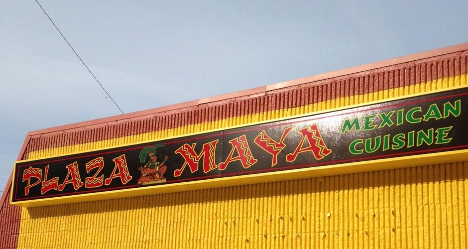
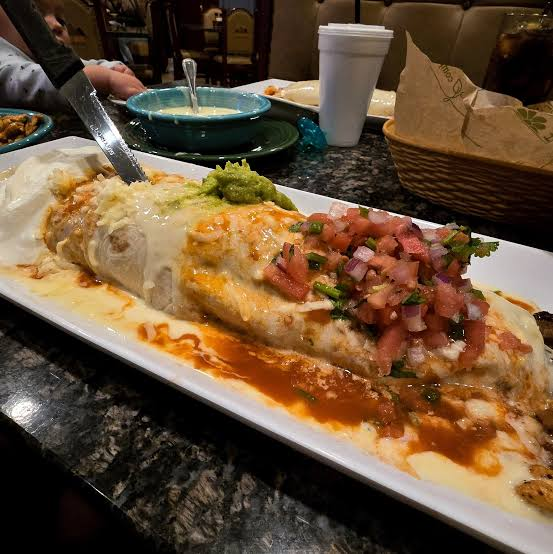
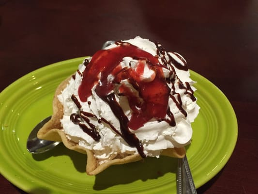

Plaza Maya Food
Plaza Maya in Charlestion, WV is a Top 5 establishment for Mexican Cuisine. The food is top tier and fresh with the most authintic ingredients and it ready to your table in a very short time. There are plenty of options to choose from not to mention the great vibes from the workers.



Some of my favorite things about the resturant is the family aspect. The food is made with love and every bite is packed with flavor. I would highly reccomend this place for anyone in the Charleston, Wv area.